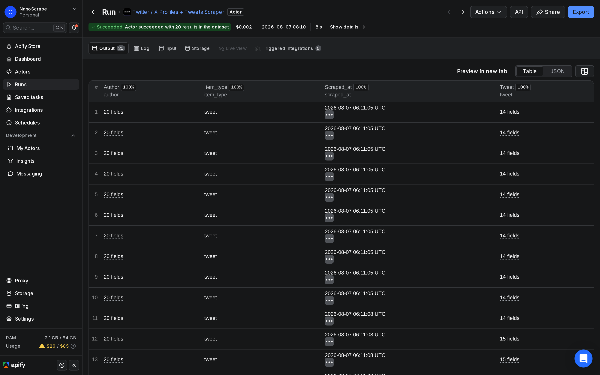
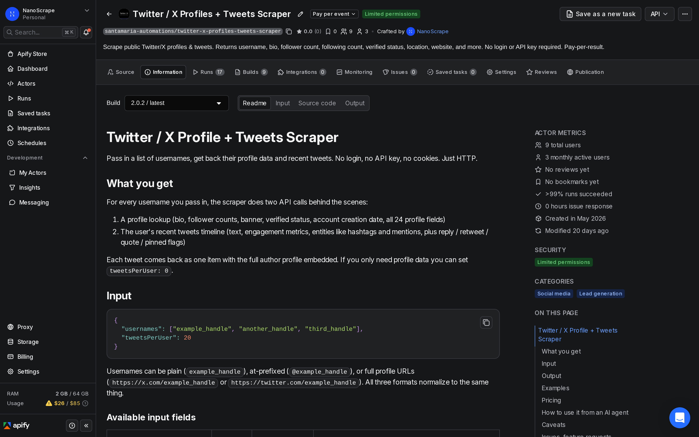
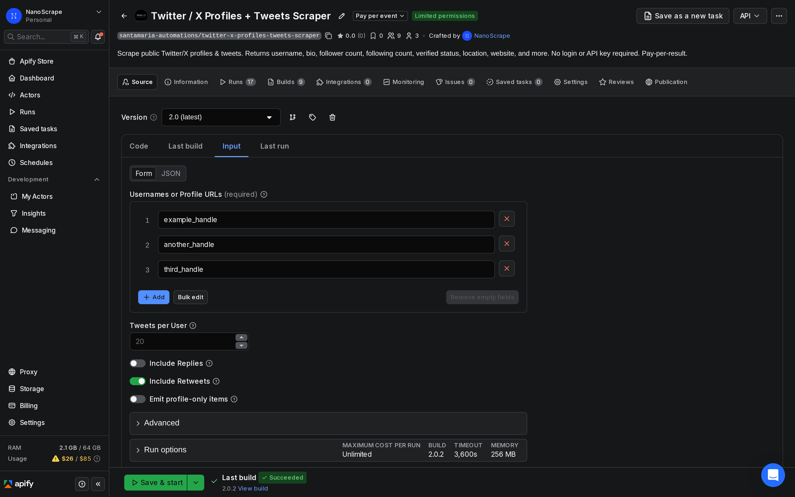
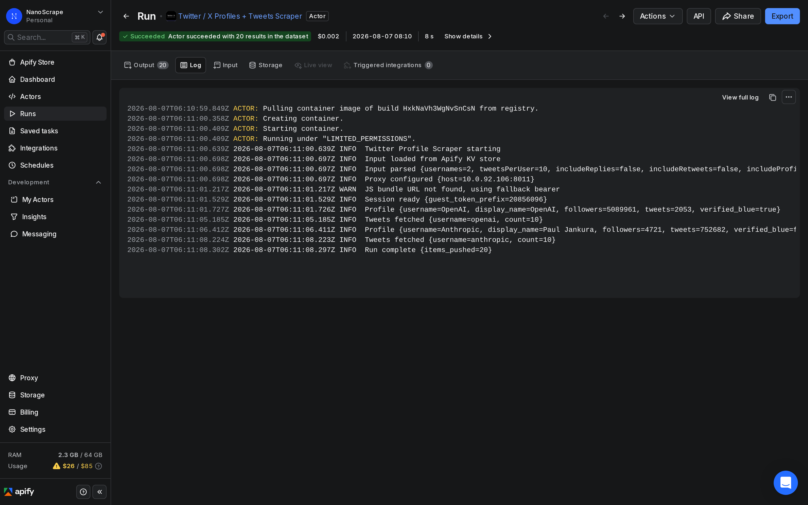

How to Run Twitter Sentiment Analysis Without a Twitter API Key
Twitter/X is where people react in real time to brands, product launches, news, and competitors. This tutorial shows how to collect public tweets from any account, no developer account or API key required, and pipe the text straight into a sentiment classifier, an LLM, or a spreadsheet. About $0.31 per 1,000 tweets.

In this tutorial
What data you get
Each item in the dataset is one tweet with the full author profile embedded. The three top-level keys are item_type, tweet, and author. For sentiment analysis you mainly care about tweet.text and tweet.lang, but the engagement and entity fields add extra signal.
{
"item_type": "tweet",
"tweet": {
"id": "2085434712429052386",
"text": "We are making better intelligence easier to access for everyone.",
"lang": "en",
"created_at": "2026-08-06T18:35:55Z",
"url": "https://x.com/openai/status/2085434712429052386",
"is_quote": false,
"is_retweet": false,
"is_reply": false,
"is_pinned": false,
"engagement": {
"reply_count": 412,
"retweet_count": 1203,
"like_count": 8971,
"quote_count": 345,
"bookmark_count": 2104,
"view_count": 2840000
},
"entities": {
"hashtags": [],
"mentions": [],
"urls": []
}
},
"author": {
"username": "openai",
"display_name": "OpenAI",
"followers_count": 8400000,
"tweet_count": 12500,
"verified": true,
"blue_verified": true
},
"scraped_at": "2026-08-06T19:00:00Z"
}- tweet.text is the raw tweet text. This is the field you pass to your sentiment classifier.
- tweet.lang is the language code inferred by Twitter. Use it to filter to your target language before classifying.
- tweet.is_retweet, tweet.is_reply are boolean flags. Set both to
falsein the input to collect only original content, which gives cleaner sentiment signal. - tweet.engagement.like_count and view_count let you weight high-reach tweets more heavily in your analysis.
- tweet.entities.hashtags is a parsed array. Use it to group sentiment by topic or campaign hashtag without regex.
- author.username and author.followers_count are embedded in every row, so you can segment results by account or weight by reach without a second lookup.
Common use cases
- Brand monitoring: Collect tweets from your brand account and from accounts that mention your product to track how public sentiment shifts after launches, outages, or PR events.
- Competitor tracking: Scrape a competitor's timeline to measure how their audience reacts to announcements, compare engagement rates, and spot topics that resonate.
- Product feedback: Pull tweets from user accounts that interact with your product and classify them as positive, negative, or neutral to feed your support or product team.
- Market research: Monitor a set of industry influencers to understand what topics are gaining momentum and how opinions are shifting.
- Event monitoring: Collect tweets around a conference or product launch in real time, then plot sentiment over the event timeline to see what landed well.
Prerequisites
- A free Apify account. Sign up at apify.com/sign-up. No credit card required. The free tier includes $5 of usage credit every month, which covers about 16,000 tweets.
- The Twitter/X usernames you want to monitor. Bare handles (
openai), at-prefixed handles (@openai), and full profile URLs all work. - A way to classify the text once you have it. Options covered in this tutorial: Python with VADER or TextBlob, an LLM API call in n8n, or a simple spreadsheet formula.
Step 1: Open the actor
- Go to the NanoScrape Twitter / X Profiles + Tweets Scraper on Apify.
- Click Try for free. Sign in with Google or email. Takes about a minute.
- The actor opens in Apify Console on the Input tab.

Step 2: Choose accounts and settings
In the Input tab, click JSON editor at the top right of the panel. The key settings for sentiment analysis are:
{
"usernames": ["yourbrand", "competitor1", "competitor2"],
"tweetsPerUser": 100,
"includeReplies": false,
"includeRetweets": false,
"proxyConfiguration": {
"useApifyProxy": true,
"apifyProxyGroups": ["RESIDENTIAL"]
}
}- usernames (required): one or more Twitter/X handles to scrape. You can mix plain handles, @handles, and full profile URLs.
- tweetsPerUser: how many recent tweets to pull per account. 100 gives a solid baseline for trend analysis. Go up to 1,000 for historical depth.
- includeReplies: false: replies are conversational and context-dependent. Excluding them keeps the sentiment signal cleaner, especially for brand voice analysis.
- includeRetweets: false: retweets reflect what an account amplifies, not what they originate. Excluding them isolates the account's own voice.
- proxyConfiguration: residential proxies are recommended. Twitter/X enforces tight rate limits on datacenter IPs, and a residential pool avoids run failures on large batches.
author.username field in every row lets you split the dataset by account after export without running the actor twice.
Step 3: Run and collect
Click Start at the top right. The actor boots immediately, looks up each username, and streams tweet items into the dataset as they arrive. A run collecting 100 tweets from two accounts typically finishes in 30 to 60 seconds.

maxIPRotations). If a run still hits a wall, re-run it and the actor picks up where the dataset left off.Step 4: Export for analysis
Once the run shows SUCCEEDED, click the Dataset tab. You see a table preview of every tweet row. To export:
- Click Export in the top right of the Dataset tab.
- Choose CSV for Excel, Google Sheets, or Python pandas. Choose JSON for programmatic pipelines or LLM APIs.
- The file downloads immediately. Each row is one tweet.
tweet.text and author.username. Add tweet.created_at to track sentiment over time, tweet.lang to filter by language, and tweet.engagement.like_count to weight high-reach tweets.Sentiment analysis workflows
Once you have the CSV or JSON, there are several paths for classifying sentiment. Pick the one that fits your stack.
Option A: Python with VADER (fast, free, no API key)
VADER (Valence Aware Dictionary and sEntiment Reasoner) is built for social media text. It handles capitalization, punctuation, and emoji well. It runs locally with no API cost.
import json
from vaderSentiment.vaderSentiment import SentimentIntensityAnalyzer
analyzer = SentimentIntensityAnalyzer()
with open("dataset.json") as f:
items = json.load(f)
for item in items:
text = item["tweet"]["text"]
scores = analyzer.polarity_scores(text)
label = (
"positive" if scores["compound"] >= 0.05
else "negative" if scores["compound"] <= -0.05
else "neutral"
)
print(item["author"]["username"], "|", label, "|", text[:60])pip install vaderSentiment. No API key, no cost, runs offline.Option B: LLM classification (more accurate, costs API credits)
For nuanced classification (sarcasm, mixed sentiment, topic extraction alongside sentiment), passing each tweet to an LLM is more accurate than a lexicon approach. A simple prompt works well:
import anthropic, json
client = anthropic.Anthropic()
def classify(tweet_text):
msg = client.messages.create(
model="claude-haiku-4-5-20251001",
max_tokens=10,
messages=[{
"role": "user",
"content": f"Classify this tweet as positive, negative, or neutral. Reply with one word only.\n\n{tweet_text}"
}]
)
return msg.content[0].text.strip().lower()
with open("dataset.json") as f:
items = json.load(f)
for item in items[:20]: # start with a small batch
label = classify(item["tweet"]["text"])
print(item["author"]["username"], "|", label)Option C: Google Sheets formula (no code)
Import the CSV into Google Sheets. Add a helper column with a simple keyword formula as a first pass, then manually review the edge cases. This is not as accurate as VADER or an LLM but requires zero setup time.
=IF(OR(ISNUMBER(SEARCH("great",A2)),ISNUMBER(SEARCH("love",A2)),ISNUMBER(SEARCH("amazing",A2))),"positive",
IF(OR(ISNUMBER(SEARCH("bad",A2)),ISNUMBER(SEARCH("terrible",A2)),ISNUMBER(SEARCH("worst",A2))),"negative",
"neutral"))includeRetweets: false. A retweet expresses amplification, not sentiment. Including them inflates your positive bucket with high-engagement viral content that does not reflect the account's own opinion.Automate recurring monitoring with n8n
For ongoing brand monitoring or competitor tracking, set up a scheduled n8n workflow that runs the scraper daily and emails you a sentiment summary. You need an Apify account and an n8n account.
- In n8n, create a new workflow and add a Schedule Trigger set to run once per day.
- Add an HTTP Request node. Set method to POST, URL to
https://api.apify.com/v2/acts/santamaria-automations~twitter-x-profiles-tweets-scraper/run-sync-get-dataset-items?token=YOUR_TOKEN, and pass your input JSON in the body. - Add a Code node. Loop through the returned items, run a keyword-based label (or call an LLM API), and count positive, negative, and neutral items.
- Add an Email node (or Slack / webhook) to send the daily summary with counts and any tweets that crossed a threshold.
run-sync-get-dataset-items endpoint returns items as a JSON array in the response body. n8n's HTTP Request node parses this automatically, so you get a ready-to-loop array without an extra parse step.What it costs
The actor uses pay-per-result pricing:
- Actor start: $0.01 one-time per run (covers container startup, session bootstrap, and the first profile lookup).
- Per tweet item: $0.0003 per tweet delivered to the dataset.
- Total for 1,000 tweets: $0.01 + (1,000 x $0.0003) = $0.31.
- Apify free tier: $5/month of usage credit, which covers about 16,000 tweets per month before you need a paid plan.
FAQ
Do I need a Twitter developer account or API key?
No. The actor uses Twitter's public HTTP endpoints and a residential proxy pool. You only need a free Apify account.
Can I scrape tweets by hashtag or keyword, not just by username?
The actor currently collects by username. For hashtag or keyword monitoring, combine it with a search by collecting from accounts that are active in your topic area, or use the n8n workflow to run the scraper across a list of relevant accounts.
How many tweets can I collect per account?
Up to 1,000 per account per run, set via tweetsPerUser. The actor fetches the most recent tweets in reverse chronological order.
Should I include replies and retweets for sentiment analysis?
For most brand and competitor monitoring tasks, no. Replies are conversational and lack context without the parent tweet. Retweets express amplification, not the account's own opinion. Setting both to false gives you the cleanest signal from original content.
What sentiment library works best for tweets?
VADER is the standard choice for social media text because it was trained on that style. For higher accuracy, especially with sarcasm or mixed sentiment, an LLM call (Claude Haiku is cost-effective at this scale) outperforms lexicon methods.
How do I track sentiment over time?
Use the tweet.created_at field. Run the scraper on a schedule, append each day's results to a dataset, then group by date when you analyze. The n8n workflow in this tutorial does exactly that.
How is this different from the Twitter/X API?
The official API requires a developer account and app registration, which can take days to approve. The free API tier is heavily rate-limited (1 request per 15 minutes for timeline lookups). This actor costs about $0.31 per 1,000 tweets with no approval process and higher throughput.
Related resources
- Twitter / X Profiles + Tweets Scraper actor page: Full specs, pricing model, and all available input options.
- How to Collect and Analyze Tweets from Any Public Account: The companion tutorial covering all output fields and export workflows in depth.
- How to Collect Reddit Data for Sentiment Analysis: The same sentiment workflow applied to Reddit posts and comments.
- How to Scrape Instagram Profiles: Collect Instagram profile and post data for cross-platform social media analysis.